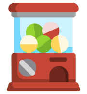

<div class="row">
  <div class="d-flex align-items-center justify-content-end mt-4 py-2">
    <!-- sound https://www.youtube.com/watch?v=04riTiv5aG0 -->
    <h2 class="mb-0">แตะเพื่อเปิดเพลง: </h2>
    <audio #audioPlayer src="../../../assets/audio/샛별(Daystar)-Sugar Cookie.mp3" data-cy="music"></audio>

    <button type="button" id="bt-play" class="btn btn-sm mx-2"
      [ngClass]="isPlayingMusic? 'btn-outline-dark':'btn-outline-success'" data-cy="MusicBtn"
      (click)="isPlayingMusic? pause() : play()"
    >
      <i class="bi" [ngClass]="isPlayingMusic? 'bi-pause-circle-fill':'bi-play-circle-fill'"></i>
    </button>
  </div>

  <div class="col d-flex justify-content-center mt-4">
    <div class="position-relative">
      <h1>วันนี้กินอะไรดีน้าาา...มาสุ่มกัน</h1>
      
      <i class="bi bi-hand-index-fill text-yellow cursor fs-1" role="button" [hidden]="isRandomAlready" (click)="ImageClick()"></i>
    </div>
  </div>

  <div class="row row-cols-1 row-cols-lg-2 g-2 mt-3" *ngIf="isRandomAlready">
    <div class="col d-flex justify-content-center justify-content-lg-end align-items-center">
      <button type="button" class="btn btn-yellow" data-cy="SearchRestaurantBtn" (click)="routeToHomepage()">
        <i class="bi bi-search-heart-fill mx-1"></i>
        ค้นหาร้านอาหารประเภท<span class="fw-bolder">{{randomResult.name}}</span>
      </button>
    </div>

    <div class="col d-flex justify-content-center justify-content-lg-start align-items-center">
      <button type="button" class="btn btn-light-yellow" data-cy="RestarantPlaylistsBtn" routerLink="/reviewer/playlist">
        <i class="bi bi-shop me-1"></i>
        ค้นหาเพลย์ลิสต์ร้านอาหารประเภท<span class="fw-bolder">{{randomResult.name}}</span>
      </button>
    </div>
  </div>
</div>
